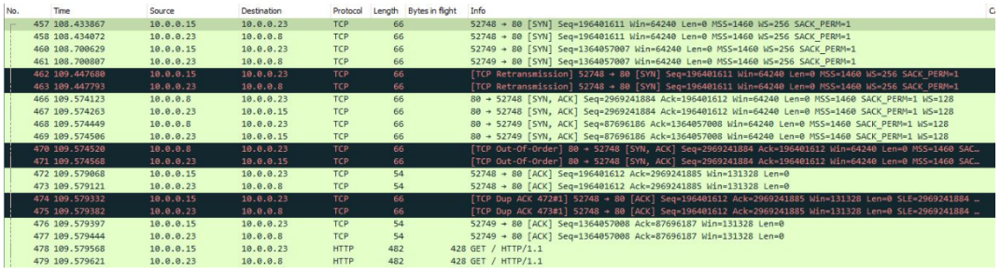

Objective
This project's objective is to design and implement a minimum-functionality Port Forwarder using any language of our choice. Port forwarding is a mechanism that facilitates the forwarding of network traffic from one machine to another. The main functionality will have the server forwarding incoming connection requests to specific/ports from any IP address, to a user-specified IP address/port. The port forwarder was developed utilizing Netfilters in mind.
Approach
The port forwarder is designed to listen on various incoming ports and then transfer the incoming connection from those ports to another machine listening on the same ports. The diagram above displays the basic connection and data flow between the client machine, port forwarding machine and the final destination machine.
The diagram describes a client machine accessing a web service, ssh service or a tcp service and makes a connection with the port forwarding machine. While the diagram describes a single machine, multiple client machines can connect to the port forwarding machine with access to different services. The port forwarding machine then connects with the final destination machine then transfers that data from the client to the server, and vice versa once the data has been received.
The script will set up the firewall rules based on the services that are running on the final destination machine. The user configurable variables will include the port forwarding machine’s ip addresss, the nal destination ip address, and the list of ports associated with the services that will run on the nal destination machine.
There will be a clean up function that will clear up the iptable rules that will be run automatically every time the script runs and manually when the iptable rules is the only thing that needs to be run. The main functionality of this script will then iterate over the list of ports and set up prerouting rules to direct incoming traffic to the final destination server and post route the traffic from the final destination server to the source port of the port forwarder ip address to send back the data to the client.
Usage
Configuration
Edit forward.conf to add additional Port:IP:Port fowarding pairs.
Execution
Type "./portf.sh"
How to run
./portf.sh
Running the above bash script on a linux machine that is designated to be a firewall / port forwarder will establish iptable rules to forward traffic to the server machine.
The server machine that will run applications such as a web server, will need to be noted on what ports they will be running on. In the portf.sh there is a variable called "SERVICES" that will list a string variable that lists ports separated by spaces. If a new service is available to be accessed on the service, the port number that the service is listening to will have to be noted and inputted into the "SERVICES" variable in the script.
In addition, IP addresses of the port forwarder and the server will need to change accordingly. Use the "ifconfig" or "ip addr" command to find out the system's ip address.
./portf.sh stop
Running the "stop" argument with the script will flush the iptable rules which will stop the port forwarder from forwarding traffic to the server that the services are running on.
Testing
Test Case 1 - Forwarding HTTP Connections:
This test is done with a web browser. I tested the port forwarding to the default webpage of the apache web server service. In this case, the final destination server will be running as a web server, and the port forwarding server will redirect incoming http traffic to that web server.
When the client enters the IP address of the port forwarding server into the web browser, the port forwarder will listen on port 80 and redirect that traffic to the web server. The port forwarder's iptable will initially have 0 packets at the start of the script running.
Monitoring tool
: Wireshark
Results
:
Once the web server has received the requesting data redirected from the port forwarding server, it will send back the web page data back to the port forwarding server to be redirected back to the client machine. The iptables on the port forwarding machine will reflect that redirection of the traffic.
The Wireshark output shows the full picture in which the port forwarding (10.0.0.23) machine makes a three way hand with the client (10.0.0.15) and with the web server (10.0.0.8). Once established, the port forwarding machine redirects HTTP traffic between the two machines.
Test Case 2 - Forwarding SSH Connections: This test is done with a windows linux subsystem terminal. I tested the port forwarding to the final destination server's ssh service. In this case, the final destination server will be running as a SSH server, and the port forwarding server will redirect incoming ssh traffic to that SSH server. The client machine (10.0.0.15) will make an attempt to establish an ssh connection to the port forwarding server (10.0.0.23) through the command line.
Monitoring tool
: Wireshark
Results
:
The port forwarder will listen on port 22 and redirect that traffic to the SSH server. The port forwarder's iptable will initially have 0 packets at the start of the script running. Once the SSH server has received the requesting data redirected from the port forwarding server, it will send SSH key exchange data back to the port forwarding server to be redirected back to the client machine. The iptables on the port forwarding machine will reflect that redirection of the traffic.
The Wireshark output shows the full picture in which the port forwarding machine (10.0.0.23) makes a three way hand with the client (10.0.0.15) and with the SSH server (10.0.0.8). Once the ssh connection is established, the port forwarding machine redirects ssh traffic between the two machines.
Test Case 3 - Forwarding TCP Echo Connections: This test is done with a windows linux subsystem terminal. I tested the port forwarding to the final destination server's echo service. In this case, the final destination server will be running as a TCP Echo server, and the port forwarding server will redirect incoming tcp traffic to the TCP Echo server. The client machine (10.0.0.15) will make attempt to establish a tcp connection to the port forwarding server (10.0.0.23) through a client application on the command line.
In this test case, 6 messages were sent from the client (10.0.0.15) to the port forwarding server (10.0.0.23) and a response for each message was sent back. The port forwarding server (10.0.0.23) forwarded the incoming traffic to the TCP Echo server (10.0.0.8) and noted the source ip and port the traffic originated from as it sends a response back. The port forwarder will listen on port 8000 and redirect that traffic to the TCP Echo server.
Monitoring tool
: Wireshark
Results
:
Once the TCP Echo server has received the requesting data redirected from the port forwarding server, it will send TCP data to the port forwarding server to be redirected back to the client machine. The iptables on the port forwarding machine will reflect that redirection of the traffic.
The Wireshark output shows the full picture in which the port forwarding machine makes a three way hand with the client and with the TCP Echo server. Once the tcp connection is established, the port forwarding machine redirects the tcp traffic between the two machines.
Conclusion
This project looks into the implementation of a minimum-functionality Port Forwarder using Netfilters to route the traffic. The report gives a look into the process and how the NAT rules can be configured to allow the packets to be routed correctly. The project developed in this way demonstrates the flexibility of the netfilter packet filtering framework and the iptables firewall. This could be further developed into setting up an internal interface, in which the port forwarding service can route traffic to internal machines with private IP addresses.
Source code
The project source code can be found here .